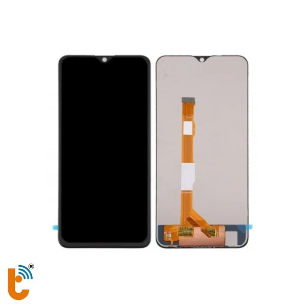
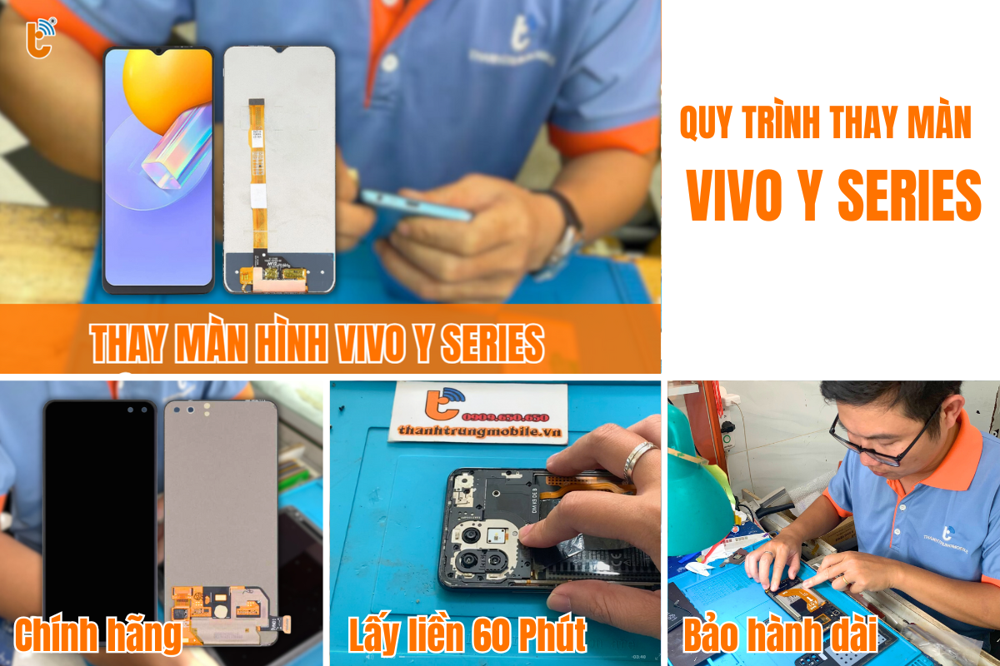

Thay Màn Hình Vivo Y Series Chính Hãng, Lấy Liền, Giá Rẻ Tại TP.HCM
Màn hình điện thoại Vivo Y Series như Y19, Y20, Y11, Y15 là yếu tố quan trọng quyết định trải nghiệm người dùng. Khi màn hình gặp sự cố, việc thay màn hình chính hãng không chỉ giúp bảo vệ tính thẩm mỹ mà còn đảm bảo chất lượng sử dụng lâu dài.
Thành Trung Mobile cam kết cung cấp dịch vụ thay màn hình Vivo Y Series chính hãng, giá rẻ, lấy liền tại TP.HCM. Cùng khám phá lý do tại sao chúng tôi là lựa chọn tốt nhất cho bạn.
Khi Nào Cần Thay Màn Hình Vivo Y Series?
Màn hình Vivo Y Series có thể gặp các sự cố phổ biến như nứt vỡ, sọc màn hình, hiển thị mờ, hay cảm ứng liệt. Đây là những dấu hiệu rõ ràng cho thấy bạn cần thay màn hình mới:
- Màn hình nứt vỡ hoặc có vết nứt lớn.
- Cảm ứng bị liệt, không phản hồi hoặc không nhạy.
- Màn hình hiển thị mờ, có sọc, điểm chết, hoặc mất màu.
- Hiển thị không sáng dù máy vẫn hoạt động bình thường.
Việc thay màn hình giúp bạn tiết kiệm chi phí, nhanh chóng có máy sử dụng lại mà không phải chuyển dữ liệu sang điện thoại mới. Ngoài ra, màn hình mới giúp bảo vệ thẩm mỹ và trải nghiệm sử dụng tốt hơn.
Giá Thay Màn Hình Vivo Y Series Chính Hãng
Tại Thành Trung Mobile, giá thay màn hình Vivo Y Series luôn minh bạch, không phát sinh chi phí ẩn. Các dòng máy Vivo Y19, Y20, Y11, Y15 đều có mức giá thay màn hình khác nhau tùy vào tình trạng màn hình và linh kiện mà bạn lựa chọn.
| Dòng Máy | Giá Thay Màn Hình | Thời Gian Bảo Hành | Thời Gian Thay Màn Hình |
|---|---|---|---|
| Vivo Y19 | 550,000 VND | 6 tháng | 1 - 2 giờ |
| Vivo Y20 | 550,000 VND | 6 tháng | 1 - 2 giờ |
| Vivo Y11 | 550,000 VND | 6 tháng | 30 phút - 1 giờ |
| Vivo Y15 | 550,000 VND | 6 tháng | 1 giờ |
Chúng tôi cũng cung cấp các ưu đãi đặc biệt, giảm giá 10% khi bạn đặt lịch thay màn hình trực tuyến. Liên hệ ngay với Thành Trung Mobile để nhận báo giá chi tiết và ưu đãi cho từng dòng máy.
Xem thêm về thay màn hình Vivo Y19Các Loại Màn Hình Vivo Y Series và Lựa Chọn Thay Thế
Vivo Y Series bao gồm các dòng máy với màn hình LCD hoặc IPS, cùng các phiên bản với các công nghệ màn hình như AMOLED, LCD, giúp bạn lựa chọn theo nhu cầu và ngân sách. Các thông số kỹ thuật màn hình của các dòng Vivo Y Series nổi bật bao gồm:
- Vivo Y19: Màn hình 6.53 inch, IPS LCD, độ phân giải Full HD+.
- Vivo Y20: Màn hình 6.51 inch, IPS LCD, độ phân giải HD+.
- Vivo Y11: Màn hình 6.35 inch, IPS LCD, độ phân giải HD.
- Vivo Y15: Màn hình 6.35 inch, IPS LCD, độ phân giải HD+.
Tùy thuộc vào nhu cầu sử dụng và ngân sách, bạn có thể chọn loại màn hình phù hợp, từ màn hình LCD cơ bản cho đến màn hình AMOLED sắc nét hơn.
Thay Màn Hình Vivo Y Series Có Ảnh Hưởng Đến Máy Không?
Thay màn hình Vivo Y Series tại Thành Trung Mobile không làm ảnh hưởng đến các linh kiện bên trong máy. Mọi thao tác được thực hiện bởi đội ngũ kỹ thuật viên tay nghề cao, đảm bảo không gây hư hại cho các bộ phận khác của điện thoại. Chúng tôi chỉ sử dụng linh kiện chính hãng, cam kết không sử dụng màn hình tái chế hoặc chất lượng kém.
Quy Trình Thay Màn Hình Vivo Y Series Chuyên Nghiệp
Quy trình thay màn hình tại Thành Trung Mobile được thực hiện nhanh chóng và minh bạch. Dưới đây là các bước thay màn hình Vivo Y Series:
- Tiếp nhận máy và kiểm tra lỗi màn hình.
- Tư vấn các phương án thay thế màn hình và báo giá chi tiết.
- Thay màn hình chính hãng và kiểm tra lại các chức năng của máy.
- Bàn giao máy cho khách hàng, dán tem bảo hành và hướng dẫn bảo quản màn hình.

Vì Sao Nên Chọn Thành Trung Mobile Để Thay Màn Hình Vivo Y Series?
- Linh kiện chính hãng, bảo hành dài hạn.
- Kỹ thuật viên tay nghề cao, quy trình thay màn hình nhanh chóng.
- Giá rẻ, luôn có ưu đãi hấp dẫn.
- Dịch vụ lấy ngay, không cần chờ lâu.
Với những ưu điểm trên, Thành Trung Mobile là địa chỉ uy tín để thay màn hình Vivo Y Series của bạn. Hãy đến ngay để trải nghiệm dịch vụ chất lượng và nhanh chóng!
Xem thêm dịch vụ thay màn hình VivoLiên Hệ Thành Trung Mobile Ngay Hôm Nay
Để thay màn hình Vivo Y Series chính hãng, lấy liền, giá rẻ tại TP.HCM, bạn có thể liên hệ với Thành Trung Mobile qua hotline hoặc ghé trực tiếp các chi nhánh gần nhất. Chúng tôi luôn sẵn sàng hỗ trợ và đảm bảo dịch vụ chất lượng tốt nhất cho bạn.
Xem thêm về thay màn hình Vivo Y20